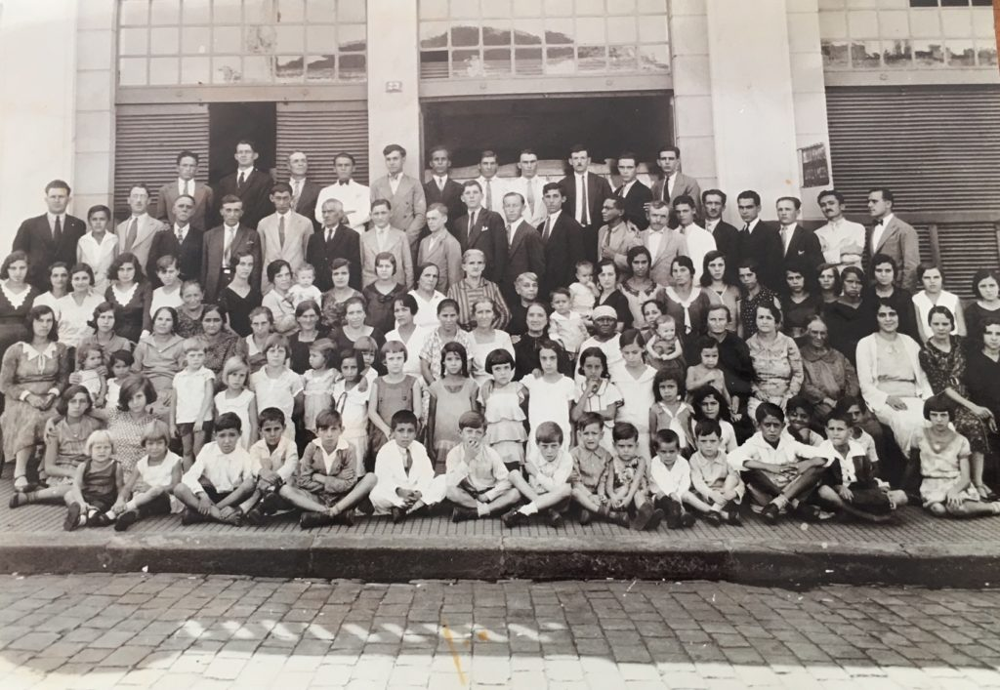

<!DOCTYPE html>
<html lang="pt-br">
<head>
    <meta charset="UTF-8">
    <meta name="viewport" content="width=device-width, initial-scale=1.0">
    <title>IASD Central RP</title>
    <link rel="stylesheet" href="style.css">
    <link rel="shortcut icon" href="Logo2.ico.jpg" type="image/x-icon">
    <style>
.historia {
            max-width: 900px;
            margin: 0 auto;
            padding: 20px;
        }

        .section {
            background: #fff;
            border-radius: 8px;
            padding: 20px;
            margin-bottom: 20px;
            box-shadow: 0 4px 6px rgba(0, 0, 0, 0.1);
        }

        h1 {
            color: #333;
            text-align: center;
            font-size: 2rem;
            margin-bottom: 20px;
        }

        p {
            text-align: justify;
            margin-bottom: 15px;
            line-height: 1.6;
        }

       

        div img {
            display: flex; justify-content: center; align-items: center;
            width: 100%;
            max-width: 1000px;
            height: auto;
            padding: 20px;
           
        }
        h5 {
            padding: 20px;
            text-align: center;
        }

        table {
            width: 100%;
            border-collapse: collapse;
            border-radius: 8px;
            box-shadow: 0 4px 8px rgba(0, 0, 0, 0.1);
        }

        thead {
            background-color: #276fb3;
            color: white;
        }

        th, td {
            padding: 12px 20px;
            text-align: left;
            font-size: 16px;
        }

        th {
            font-weight: bold;
            text-transform: uppercase;
        }

        tr:nth-child(even) {
            background-color: #f9f9f9;
        }

        td {
            background-color: white;
        }

        caption {
            font-size: 1.5em;
            margin-bottom: 10px;
            font-weight: bold;
        }

        @media screen and (max-width: 768px) {
            table {
                font-size: 14px;
            }

            th, td {
                padding: 8px 12px;
            }
        }
    </style>
</head>
<body>
    <!-- MENU CODE GOES HERE -->
</body>
</html>
    </style>
</head>
<body>
    <nav class="menu">
        <div class="hamburguer" onclick="toggleMenu()">
            <div></div>
            <div></div>
            <div></div>
        </div>
        <a href="index.html"></a>
        <ul>
            <li><a href="#">Redes Sociais</a>
                <div class="dropdown">
                <a href="https://www.instagram.com/adventistasribeiraopreto?igsh=azVxM3ozdWc2b3Z1">Instagram</a>
                <a href="https://www.facebook.com/iasdcentralribeiraopreto">Facebook</a>
                <a href="https://open.spotify.com/playlist/1AtG9Fxi0iiJPXGP1dPHxC?si=T0wK0lSBRpWSMSHtEQ9Exg">Playlist Hinário</a>
                </li>
            <li><a href="#">Acomodações</a>
                <div class="dropdown">
                    <a href="igreja.html">Igreja</a>
                    <a href="jovem.html">Sala jovem</a>
                    <a href="adolescentes.html">Sala do adolescentes</a>
                    <a href="juvenis.html">Sala do juvenis</a>
                    <a href="primarios.html">Sala do primários </a>
                    <a href="jardimdainfancia.html">Sala do jardim da infância</a>
                    <a href="roldoberço.html">Sala do rol do berço</a></li>
            <li><a href="crenças.html">Crenças</a></li>
            <li><a href="historia.html">História</a></li>
            <li><a href="pastor.html">Pastor distrital</a></li>
            <li><a href="ancionato.html">Ancionato</a></li>
        </ul>
    </nav>
    <div class="mobile-menu" id="mobileMenu">
        <span class="close-btn" onclick="toggleMenu()">&times;</span>
        <div class="rodape-coluna">
            <h3>Nossa Igreja</h3>
            <ul>
                <li><a href="historia.html">História</a></li>
                <li><a href="crenças.html">Crença</a></li>
                <li><a href="pastor.html">Pastor Distrital</a></li>
                <li><a href="ancionato.html">Ancionato</a></li>
            </ul>
        </div>
        
        <div class="rodape-coluna">
            <h3>Salas e Ministérios</h3>
            <ul>
                <li><a href="igreja.html">Igreja</a></li>
                <li><a href="jovem.html">Sala Jovem</a></li>
                <li><a href="adolescentes.html">Sala Adolescentes</a></li>
                <li><a href="juvenis.html">Sala Juvenis</a></li>
                <li><a href="primarios.html">Sala Primários</a></li>
                <li><a href="jardimdainfancia.html">Sala Jardim da Infância</a></li>
                <li><a href="roldoberço.html">Sala Rol do Berço</a></li>
            </ul>
        </div>
        <div class="rodape-coluna">
            <h3>Redes Sociais</h3>
            <ul>
                <li><a href="https://www.facebook.com/iasdcentralribeiraopreto">Facebook</a></li>
                <li><a href="https://www.instagram.com/adventistasribeiraopreto?utm_source=ig_web_button_share_sheet&igsh=ZDNlZDc0MzIxNw==">Instagram</a></li>
                <li><a href="https://open.spotify.com/playlist/1AtG9Fxi0iiJPXGP1dPHxC?si=vJ6ycF0GQrmCToUKvSxo-w">Hinos</a></li>
            </ul>
        </div>
    </div>
    <script>
        function toggleMenu() {
            document.getElementById('mobileMenu').classList.toggle('show');
        }
    </script>
        <div>
        <div class="historia">
          
          <div class="section"><h1>Igreja Adventista do Sétimo Dia em Ribeirão Preto</h1>
              <p>A mensagem Adventista chegou em Ribeirão Preto em 1928, através de um Colportor. Passando por uma estrada a cavalo, encontrou o Sr. Luiz Trivelatto esculpindo um Santo Católico no portão do seu sítio, que hoje está situado no Ribeirão Shopping. Eles começaram a conversar e logo o Colportor pediu pouso ao Sr. Luiz, que bondosamente o recebeu.</p>
  <p>
                  O Colportor trazia consigo duas pesadas malas e pediu que o Sr. Luiz guardasse uma delas, pois voltaria para buscá-la, mas esse dia nunca chegou. Dois anos mais tarde, o Sr. Luiz, não resistindo à curiosidade, abriu a mala e encontrou uma Bíblia. Ao lê-la, descobriu a verdade sobre a guarda do sábado. Como não tinha conhecimento sobre a igreja que guardava o sábado, passou a frequentar os cultos com os Metodistas, mas não se sentia satisfeito.
                  </p><p>
                  Um dia, ao sair da sua igreja, descobriu um pequeno salão com o letreiro: Igreja Adventista do Sétimo Dia, onde o Pr. Luis Braun realizava os cultos com poucas pessoas. Interessado, passou a frequentar a igreja com toda a sua família. Além dos cultos, eram realizados estudos bíblicos com seis famílias na residência da Sra. Suzana Ferreira, na Rua Ceará, nos Campos Elíseos.</p>
  
              <p>Vale ressaltar que o Sr. Luiz Trivelatto era pai de Rosa Sella e avô de João e Nelson Sella. Rosa, filha de Luiz Trivelatto, decidiu guardar o sábado após um milagre da cura do seu filho Nelson. Em 1930, aconteceu o primeiro batismo, do qual participaram Rosa Sella, Luiz Trivelatto com sua família e outros.</p>
              <p>No início de 1932, foi formado outro grupo de estudos, desta vez na residência da Sra. Rosa Trigo, na Vila Tibério. Nessa ocasião, o Pr. Alfredo Meyer dava assistência espiritual ao pequeno grupo. Mais tarde, com a vinda permanente da Obreira Bíblica Iracema Zorub, foi alugado um salão maior na Rua Tibiriçá, para comportar todas as famílias.</p>
              <p>O maior batismo aconteceu em 1932, através de uma conferência pública realizada pelo Pr. Gerônimo Garcia, com o apoio da Obreira Iracema Zorub. Para alegria de todos, cerca de 40 pessoas foram batizadas no Córrego Ribeirão, próximo ao local onde hoje se encontra a Câmara Municipal. Em dezembro do mesmo ano, o grupo já contava com 80 pessoas batizadas.</p>
  <p>
                  Com o crescimento da congregação, o salão alugado tornou-se pequeno, sendo necessário alugar outro maior, entre as Ruas General Osório e São Sebastião. No entanto, a igreja decidiu construir um prédio próprio, e em 1937 foi inaugurada a sede da primeira Igreja Adventista, na Rua Visconde de Inhaúma, 130. Na época, o Pr. Manoel Margarido era o Chefe do Distrito Missionário, pois a igreja ainda não era oficialmente organizada.</p>
              <p>Após o Pr. Manoel Margarido, vieram outros pastores, como o Pr. Elias Castilho, Pr. José Siqueira, Pr. Valdemar Rodrigues e Pr. Ermano Bassi. No entanto, somente em 1957 a igreja foi oficialmente organizada, tendo como Obreiro Oficial o Pr. Waldemar Leitzke. Em seguida, passaram pela igreja os pastores Nazareth Bronze, Ezoardo Ribeiro, Durval Campardo e Ruy Chagas Câmara.</p>
              <p>Em 1970, com a chegada do Pr. Cesar Augusto da Costa, surgiu a necessidade de um novo endereço. No final desse mesmo ano, a igreja antiga foi vendida e um terreno foi comprado na Rua Visconde do Rio Branco, 862, onde a igreja se encontra atualmente.</p>
              <p>De 1970 a 1973, enquanto a nova sede era construída, os membros passaram a frequentar as igrejas da Lapa e da Vila Virgínia. Em 1974, retornaram para o novo prédio da Igreja Central, mas como a nave da igreja ainda estava inacabada, as reuniões eram realizadas no Salão dos Jovens.</p>
              <p>Em 1976, com a vinda do Pr. Renne Teixeira dos Reis, as obras da igreja foram retomadas. Em 1978, ocorreu a inauguração da nova sede da Igreja Central. Ainda durante a gestão do Pr. Renne, houve a reabertura da Escola Adventista.</p>
              <p>Para finalizar, segue a primeira ata da comissão da igreja e a relação dos pastores a partir da organização da igreja em 1957.</p>
          </div></div></div>
<h5>RELAÇÃO DOS PASTORES DE RIBEIRÃO PRETO – SP

    A PARTIR DA IGREJA ORGANIZADA NA SEDE PRINCIPAL</h5>
    <table>
        <caption>Histórico de Pastores</caption>
        <thead>
          <tr>
            <th>Pastores</th>
            <th>Período</th>
          </tr>
        </thead>
        <tbody>
          <tr>
            <td>Waldemar Leitzke</td>
            <td>1957 – 1958</td>
          </tr>
          <tr>
            <td>Nazareth Bronze</td>
            <td>1958 – 1960</td>
          </tr>
          <tr>
            <td>Ezoardo Ribeiro</td>
            <td>1961 – 1963</td>
          </tr>
          <tr>
            <td>Durval Campardo</td>
            <td>1964 – 1966</td>
          </tr>
          <tr>
            <td>Ruy Chagas Câmara</td>
            <td>1967 – 1969</td>
          </tr>
          <tr>
            <td>Cesar Augusto da Costa</td>
            <td>1970 – 1974</td>
          </tr>
          <tr>
            <td>Ancião – Argemiro Fontouro</td>
            <td>1975 – 1975</td>
          </tr>
          <tr>
            <td>Renne Teixeira dos Reis</td>
            <td>1976 – 1978</td>
          </tr>
          <tr>
            <td>Gustavo Pires da Silva</td>
            <td>1979 – 1980</td>
          </tr>
          <tr>
            <td>Ancião – José Duarte de Almeida</td>
            <td>1980 – 1980</td>
          </tr>
          <tr>
            <td>Josias Moreira de Castro</td>
            <td>1981 – 1981</td>
          </tr>
          <tr>
            <td>Acilio Alves Filho</td>
            <td>1982 – 1983</td>
          </tr>
          <tr>
            <td>Ademir de Oliveira</td>
            <td>1984 – 1985</td>
          </tr>
          <tr>
            <td>Miguel Freire de Oliveira</td>
            <td>1986 – 1986</td>
          </tr>
          <tr>
            <td>Moab Pimentel</td>
            <td>1987 – 1990</td>
          </tr>
          <tr>
            <td>Victor de Pádua</td>
            <td>1991 – 1994</td>
          </tr>
          <tr>
            <td>Laerte Lanza</td>
            <td>1995 – 1996</td>
          </tr>
          <tr>
            <td>Roberto Urel</td>
            <td>1997 – 2002</td>
          </tr>
          <tr>
            <td>Aerce Marsola</td>
            <td>2002 – 2004</td>
          </tr>
          <tr>
            <td>Daniel Tavares Marques</td>
            <td>2005 – 2006</td>
          </tr>
          <tr>
            <td>Alvaro Martinho</td>
            <td>2007 – 2007</td>
          </tr>
          <tr>
            <td>José Pereira dos Santos</td>
            <td>2008 – 2014</td>
          </tr>
          <tr>
            <td>Fábio dos Santos</td>
            <td>2015 – 2021</td>
          </tr>
          <tr>
            <td>Matheus Motta</td>
            <td>2022 – 2022</td>
          </tr>
          <tr>
            <td>José Lino</td>
            <td>2023 – Atual</td>
          </tr>
        </tbody>
      </table>
      <div class="rodape-container">
        <div class="rodape-grid">
            
            <div class="rodape-coluna">
                <h3>Nossa Igreja</h3>
                <ul>
                    <li><a href="historia.html">História</a></li>
                    <li><a href="crenças.html">Crença</a></li>
                    <li><a href="pastor.html">Pastor Distrital</a></li>
                    <li><a href="ancionato.html">Ancionato</a></li>
                </ul>
            </div>
            
            <div class="rodape-coluna">
                <h3>Salas e Ministérios</h3>
                <ul>
                    <li><a href="jovem.html">Sala Jovem</a></li>
                    <li><a href="adolescentes.html">Sala Adolescentes</a></li>
                    <li><a href="juvenis.html">Sala Juvenis</a></li>
                    <li><a href="primarios.html">Sala Primários</a></li>
                    <li><a href="jardimdainfancia.html">Sala Jardim da Infância</a></li>
                    <li><a href="roldoberço.html">Sala Rol do Berço</a></li>
                </ul>
            </div>
            
            <div class="rodape-coluna">
                <h3>Contato</h3>
                <ul>
                    <li>Endereço: Rua Visconde do Rio Branco, 862 - Centro, Ribeirão Preto - SP, 14010-130</li>
                   
                </ul>
            </div>
            
            
            <div class="rodape-coluna">
                <h3>Redes Sociais</h3>
                <ul>
                    <li><a href="https://www.facebook.com/iasdcentralribeiraopreto">Facebook</a></li>
                    <li><a href="https://www.instagram.com/adventistasribeiraopreto?utm_source=ig_web_button_share_sheet&igsh=ZDNlZDc0MzIxNw==">Instagram</a></li>
                    <li><a href="https://open.spotify.com/playlist/1AtG9Fxi0iiJPXGP1dPHxC?si=vJ6ycF0GQrmCToUKvSxo-w">Hinos</a></li>
                </ul>
            </div>
            
        </div>
        
        <div class="rodape-copy">
            © 2025 Igreja Adventisa do Sétimo Dia Central Ribeirão Preto
        </div>
    </div>
</body>
</html>